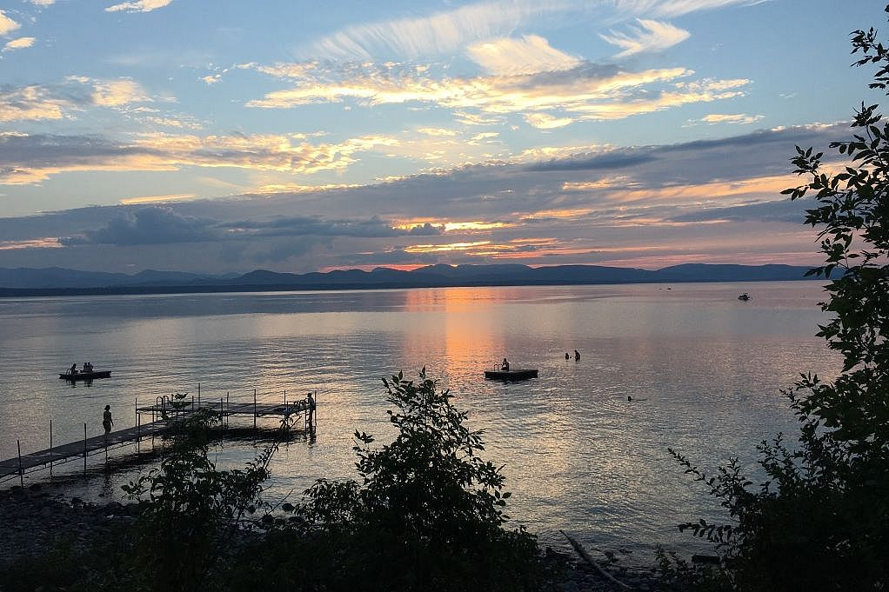
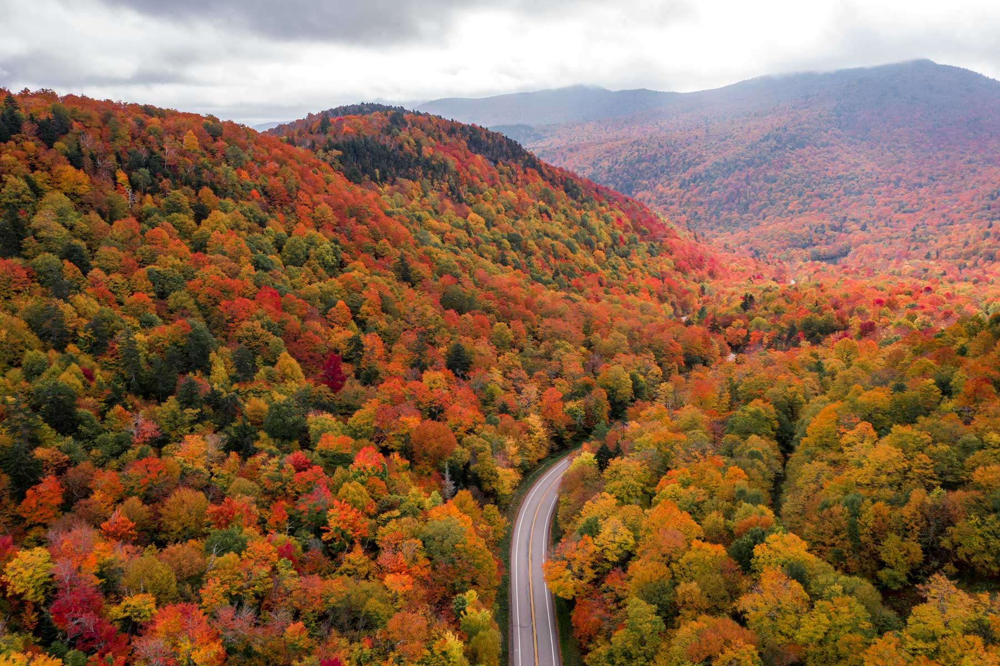
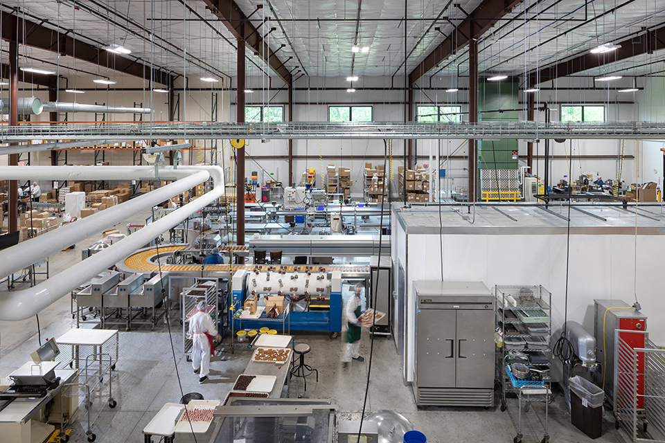

One of the most surprising questions ever broached by my father occurred when I was in my 20s and on break from college. He asked if growing up in Vermont had been an okay experience for me. This was so out of character in so many ways and I was somewhat shocked by the question. I asked him to elaborate. He said that he was concerned about how rural it was and the potential lack of opportunities for learning about the world. He explained the pros and cons he and my mother had discussed before making that move (we made some big moves throughout my childhood) and he was curious to know, I think, how their decision had impacted my life. I reassured him that I had loved it there and our conversation moved on. That question has stuck with me over the years, though, because I don't think I understood at that point how deeply growing up in the woods in Charlotte shaped who I am and how I experience the world.
Fast forward to 2018-ish and a random interaction with some St. Louis friends during their vacation in the Northeast. They were driving through Vermont, stopping at stores and various sight-seeing points, and felt compelled to send me a text that read something like: "Driving through VT. We understand you so much better now!" I, of course, called them and asked them what they meant by that. They referenced homemade jam and wool festivals and mountains and lakes, and I laughed and responded - yep.
In 2020, during lockdown, a group of friends and I started a zoom meet where we would give presentations to each other on any subject we desired. For my first presentation I chose to share the things that I loved about Vermont. By this point I was deep diving into my Vermont experiences and what I believe I took away from them...

A respect for, and love of, nature
You cannot grow up in Vermont without learning to respect nature. Nature is no joke. The winters alone are harsh and bitter cold (the record while we lived there was -40°F). It was so cold that I would try to hold my breath from the door to the car so that my lungs wouldn't sting inhaling the air. Eyelashes inevitably froze to each other and I'd have to use my twice-gloved fingers to melt them and reopen my eyes. My mom ploughed us out of our (mile-long!) driveway so that we could go to school and so that she could go to the store. We had to stock up on items just in case we got a Nor'easter. It was intense.
It was also beautiful. There was a day I remember looking out from my window and seeing that freezing rain had covered individual branches on the treesand bushes of the entire forest. The sun was shining and it was a magical glittery wonderland. When it snowed we would invite family friends over to build this massive sled run that started at our deck and went all the way down our hill with banked turns and trees you needed to avoid running into.


In the spring there was mud. Everywhere. The kind of mud where you regularly lost your boot and then had to try to figure out how to get it unstuck and back on your foot without letting your sock touch the ground. (For more on this topic check this out.) There were wildflowers and baby animals and snake "nests" and all kinds of new life.
The summer was hot and muggy with mosquitos the size of a Buick (any Annie Hall fans?), but there was also the lake. Lake Champlain was so clear and clean and beautiful. With a lake like that, the idea of pollution and/or not picking up your trash was absolutely unacceptable. I can still smell the crisp air and feel the serenity that lake provides deep in my bones.

And then there's the fall. I used to make fun of the leaf-peepers. I thought it was ridiculous that people would travel from hundreds of miles away to look at leaves. I had no idea how lucky I was to enjoy that scenery as my daily life's backdrop. Those gorgeous hues! The experience of nature's timeline made me feel deeply connected to existence, the planet and my animal place in it all.
A zest for creating and causes
I'm not sure if it's where we happened to live or what, but Vermont was full of creative entrepreneurs (many with food-related endeavors, as it turns out). From our family friend, Linda, who tapped her maple trees and spent hours boiling the sap down into syrup, to my sister's friend's dad, Bob Stiller, who founded Green Mountain Coffee, boutique and not-so-boutique businesses were everywhere. People were doing things. And the message that I received was: "This is what people do - they make things. And if you can think of it, you can find a way to do it."
Let's start with the obvious: Ben & Jerry's
In grade school we took a class trip to Waterbury to tour the Ben & Jerry's factory. We learned all about how Ben and Jerry met (I still vaguely remember the video we watched where one of them asked the other's mom if he could come out and play) and about their activism through ice cream. We saw the factory in action and got to sample flavors. What more could you want? I'll tell you what:
- To try the Vermonster. Unless my memory fails me, back in the late 80s/early 90s the Vermonster included 1 scoop of EVERY FLAVOR OF ICE CREAM (now it only contains 20). It was ENORMOUS. LITERALLY A BUCKET OF ICE CREAM SUNDAE. Because of this (and because our parents were sane) we were never allowed to order it. But I think, assuming I could rally a group of 20 or so of my closest friends, it could go back on the bucket list (no pun intended).
- To get a vintage B&J's Woody Jackson T-Shirt. This is going to happen.
- To revive the White Russian flavor from the Graveyard. Hands down the best milkshake flavor ever.


A little closer to home and also food-related was Lake Champlain Chocolates
One of my best friends in grade school was Ellen Lampman. Among other things she used to share her pepperoni and cheese snacks and invite me to come over to play Zelda on her Nintendo. Ellen's dad owned a chocolate factory. He would bring home samples for new recipes and let us taste test them. We would have sleepovers and wake up in the middle of the night to sneak into her cupboard and help ourselves to more. One year, our class got to visit the factory and learn how chocolates were made. I have never seen so much chocolate in my life. I remember this massive vat with a huge stirring mechanism and all I could think about was jumping into that vat and swimming through all of that chocolate. Ellen's dad was like a real-life Willy Wonka (without the creepy factor). He made happiness for a living. Today, he, Ellen and her brother continue their business focusing on fairtrade, sustainable sourcing and investing in their community.
Not too far physically from our home was Cold Hollow Apple Cider
Another school tour taught us about pressing apples through huge wooden-slat cider presses (it looks like they have updated their machinery) and the number of apples it takes to make a gallon of cider (just a little over a peck - yeah, I absolutely googled that bc there's no way I could remember). The fresh cider was out-of-this-world delicious and they made sure that the rest of the apple didn't go to waste, which was a great lesson that really stuck with me. I can't remember what they said they did with the pomace, but I think it was along the lines of compost. Now it looks like they turn it into dog treats.


...more to come!